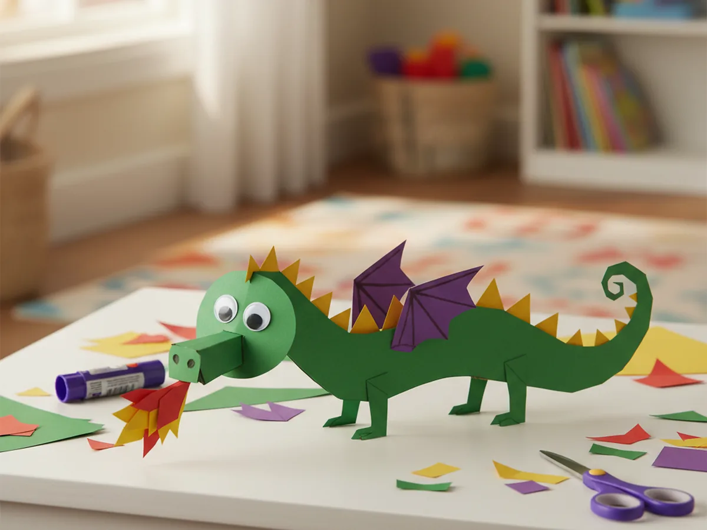
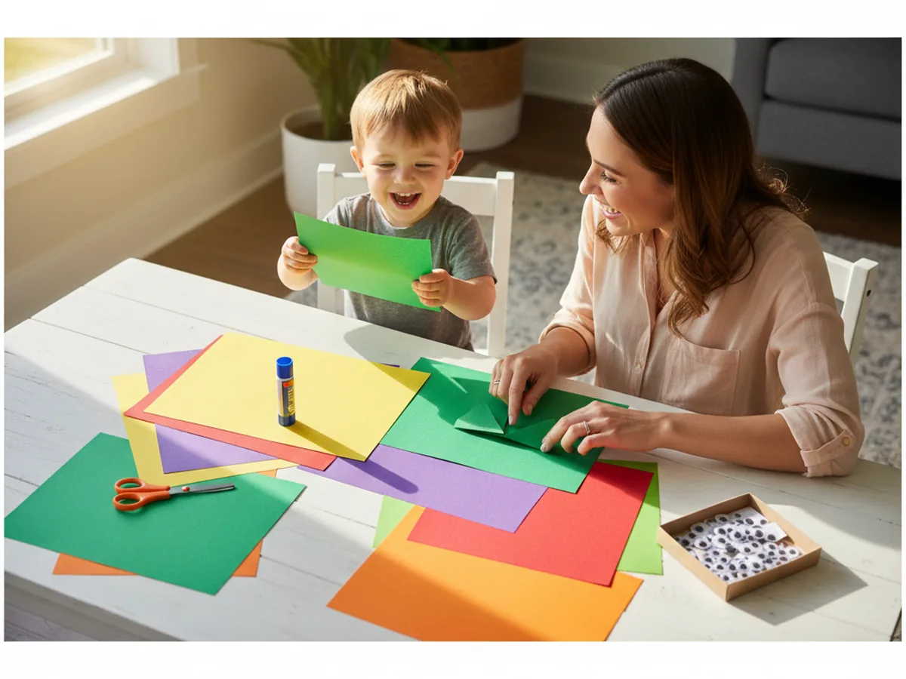
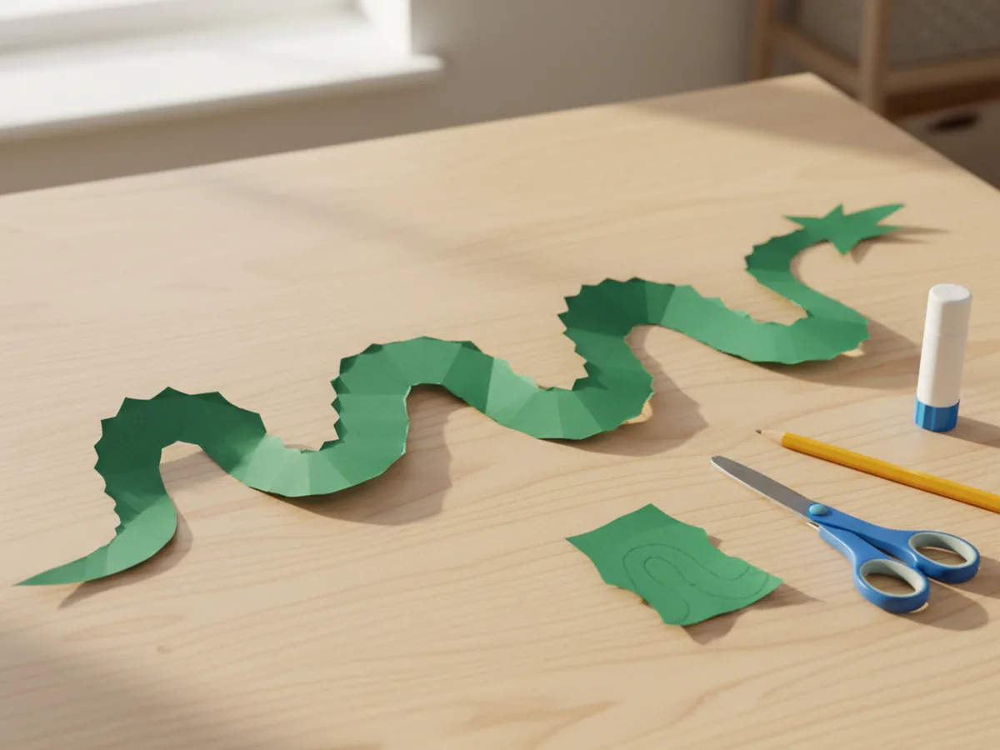
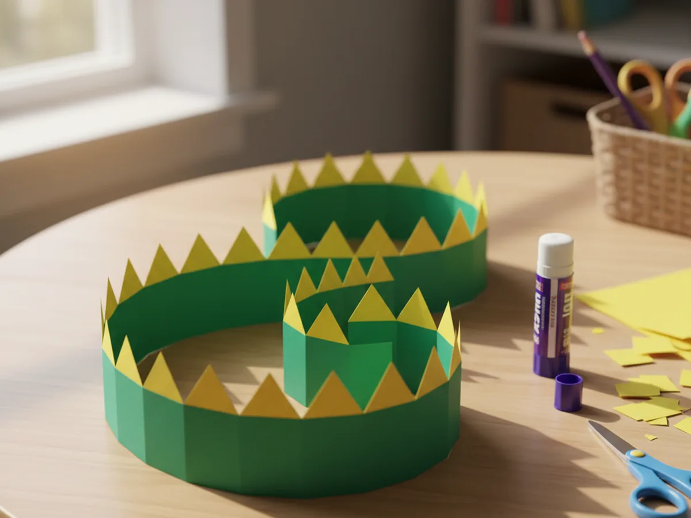
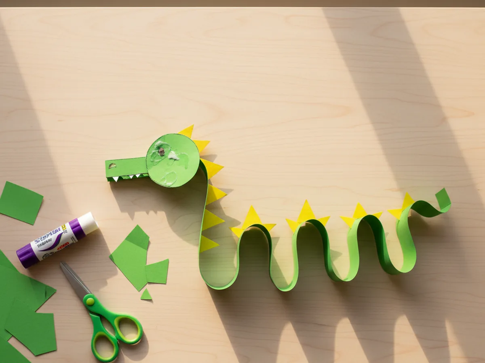
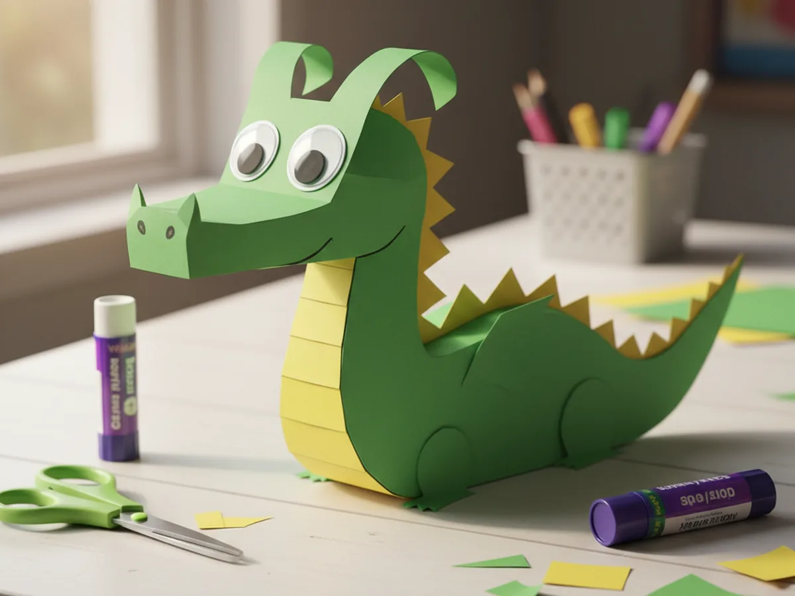
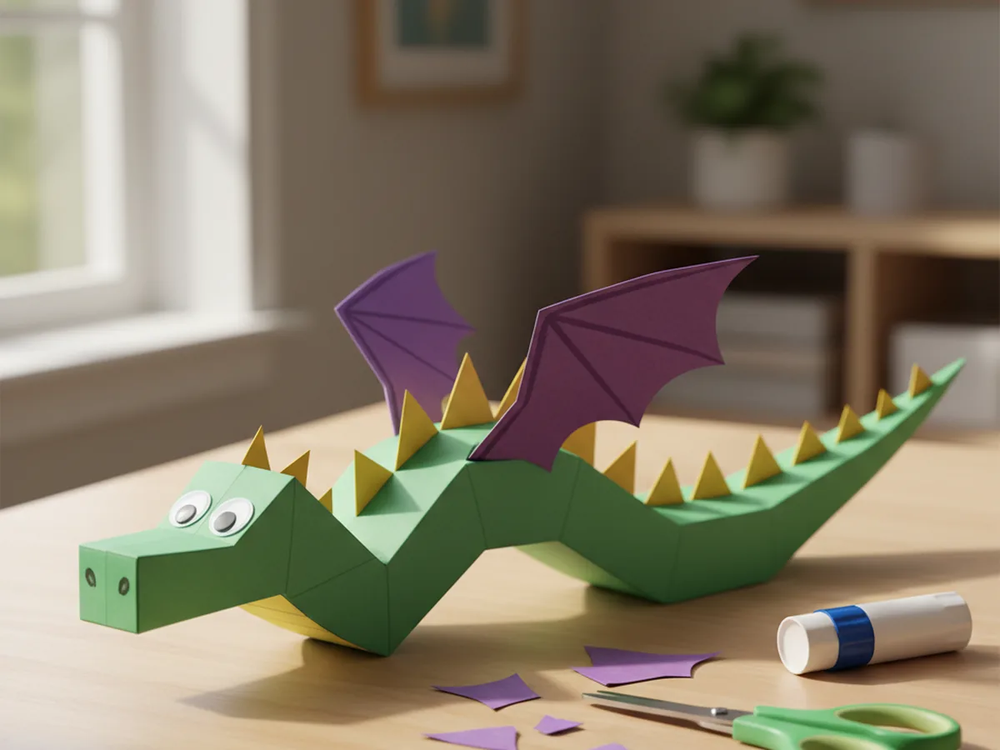
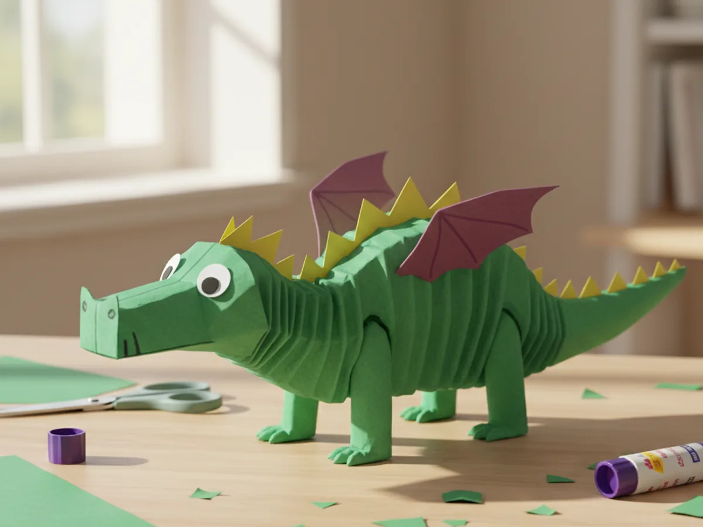
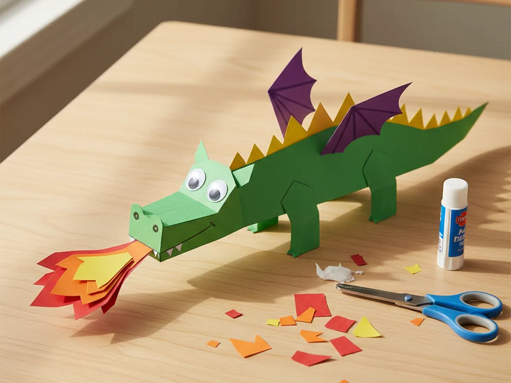

If your little one is currently obsessed with dragons (or just learning that dragons are basically the coolest animal of all time), you are about to make their whole afternoon. This dragon paper craft is friendly, smiley, and just the right amount of fierce, with a long curvy body, zigzag back spikes, little wings, and bright paper flames bursting from its mouth. 🐉
The whole project takes about 35 minutes from start to finish, including all the fun cutting, gluing, and the moment your child gets to add the eyes and bring their dragon to life. There is almost no mess, the supplies are simple, and every step is gentle enough for small hands. Grab your construction paper, clear a corner of the table, and let's make a dragon together.
Why Kids Love This Craft
Dragons live in that magical sweet spot between fairy tales and adventure stories, which makes them irresistible to little ones. This dragon paper craft lets your child build their very own friendly dragon from the ground up, choosing the curve of its body, the height of its spikes, and exactly how big its flames should be. That feeling of creating a creature from nothing is genuinely thrilling for young kids.
Each step is simple enough that even three-year-olds can join in on most of the work. Cutting curvy ovals, gluing zigzag spikes, peeling googly eyes, and arranging flames around the mouth all give little hands plenty of low-pressure fine motor practice. Because the project is very forgiving (a slightly wonky body just makes the dragon look more charming), nobody ever feels like they are doing it wrong.
Once the paper dragon craft is finished, the storytelling begins almost on its own. Kids name their dragon, decide what it likes to eat, and send it on imaginary adventures across the kitchen table. That natural slide from craft time into pretend play is one of the loveliest things about this project, and it keeps little minds happily busy long after the glue has dried. ✨

What You'll Need
Everything for this dragon paper craft can come from a basic craft drawer. Here is the full list of supplies.
- Crayola Construction Paper (240 sheets, assorted colors), you will mainly need green, yellow, purple, red, and orange.
- Elmer's Washable Glue Sticks (6 count), a glue stick is cleaner than liquid glue and just as strong for layered paper shapes.
- Fiskars 5" Blunt-Tip Kids Scissors, safe and easy for little hands to manage every cut.
- Upins Self-Adhesive Googly Eyes (1000 count), the peel-and-stick kind makes the dragon's face come alive in seconds.
- Crayola Broad Line Washable Markers (12 count), for adding nostrils and any small details to the body.
- Pencil, for lightly sketching the dragon body and head before cutting.
Step-by-Step Instructions
Take your time with each step and let your child help wherever they can. The dragon paper craft comes together piece by piece, and each new shape adds another moment of "oh wow, look!"
Step 1: Cut the Curvy Dragon Body
Start with a sheet of green construction paper laid in landscape orientation. Lightly sketch a long S-shaped body that swoops from one side of the page to the other, a bit like a sleeping snake with a chubbier middle. Aim for a body about the length of the page and roughly two fingers wide at its thickest point. Once the shape feels right, cut it out together. The curves do not need to be perfect, a wobbly dragon is a charming dragon.

Step 2: Add the Yellow Back Spikes
Now for one of the most fun parts of the paper dragon craft. From a sheet of yellow construction paper, cut a long thin strip about half an inch wide and as long as the body. Then cut a zigzag pattern along one edge to make a row of triangular spikes. Spread glue along the flat edge and press it onto the top side of the green body, following the curve from head to tail. Suddenly your dragon has a fierce, friendly back ridge.

Step 3: Cut and Attach the Head
Time to give your dragon a face. From the leftover green paper, cut a rounded head shape with a small extending snout, a bit like a soft mushroom or a wide teardrop. Aim for a head about the size of a small cookie. Spread glue on the back and press it firmly to one end of the curvy body, pointing slightly upward so the dragon looks alert and ready for adventure. The body is starting to look unmistakably like a dragon now.

Step 4: Add Eyes and Nostrils
Here comes the moment every kid waits for. Peel two googly eyes from the sticker sheet and press them on top of the head, leaving a little space between them so the dragon looks bright and curious. Then use a black washable marker to draw two small nostril dots on the snout. Suddenly your dragon paper craft has a personality, and most kids will gasp a little when those eyes go on. It is one of those small craft moments that is just plain magic.

Step 5: Cut and Glue the Wings
Every great dragon needs wings, and these ones are wonderfully simple. From purple construction paper, cut two matching wing shapes that look a bit like a heart cut in half, with two or three soft scallops along the bottom edge to suggest a bat-style wing. Glue them onto the upper side of the dragon's middle, slightly overlapping the body so they look like they are spreading out from the back. Your paper dragon craft is officially ready for takeoff.

Step 6: Add Four Little Legs
From the leftover green paper, cut four small leg shapes about an inch long, each ending in a softly rounded foot. They can be simple stubby ovals or little upside-down teardrops, whichever feels easier for your child. Glue two legs along the underside of the front section of the body and two along the underside of the back section, angling them outward slightly so it looks like your dragon is mid-stomp. The whole creature suddenly feels grounded and ready to go.

Step 7: Finish with Fiery Flames
This is the best part. Cut a few small flame shapes from red, orange, and yellow construction paper, layering them so a yellow flame sits inside an orange flame inside a red flame. Glue them in front of the dragon's snout so they look like they are bursting out of its mouth. Dragons have shown up in storytelling traditions all over the world, and now your child has a friendly fire-breathing one of their very own. Step back together and admire the finished paper dragon for a moment. It is a real "we made this" feeling. 🔥

Variations to Try
Sleepy Baby Dragon Version: Make a smaller, rounder dragon with a tucked-in tail and closed crescent-shaped eyes drawn with a marker instead of googly eyes. Skip the flames and add a little white paper cloud above the dragon's head with the letter "Z" drawn inside. This version is calming, sweet, and perfect for bedtime-themed crafts or storybook scenes.
Chinese New Year Dragon: Swap the green body for bright red paper and the back spikes for gold or yellow, then add gold paper accents along the body. Glue the finished dragon onto a long paper banner so it stretches dramatically across the page. This version turns the same craft into a beautiful celebration project for Lunar New Year.
Dragon Puppet on a Stick: Glue the finished dragon onto a wooden craft stick or a paper straw so your child can hold it up and zoom it through the air. This adds a whole layer of pretend play after the craft is done, and it makes the dragon a wonderful prop for storytelling, sibling games, or quiet imaginative time.
Final Thoughts
This dragon paper craft is one of those gentle afternoons where simple shapes turn into something a child will treasure for days. A few pieces of construction paper, a glue stick, and a handful of googly eyes, and suddenly there is a smiling dragon flapping across the kitchen table with a name and a personality and a favorite hiding spot. Your child will absolutely glow with pride when it is finished.
Tape the finished dragon somewhere visible so your little crafter can admire their work all week. There is real magic in watching a child point to the wall and say, "I made that, and her name is Ember."
More Crafts You'll Love
If your child loved this dragon paper craft, these other animal-themed paper projects make wonderful next activities: